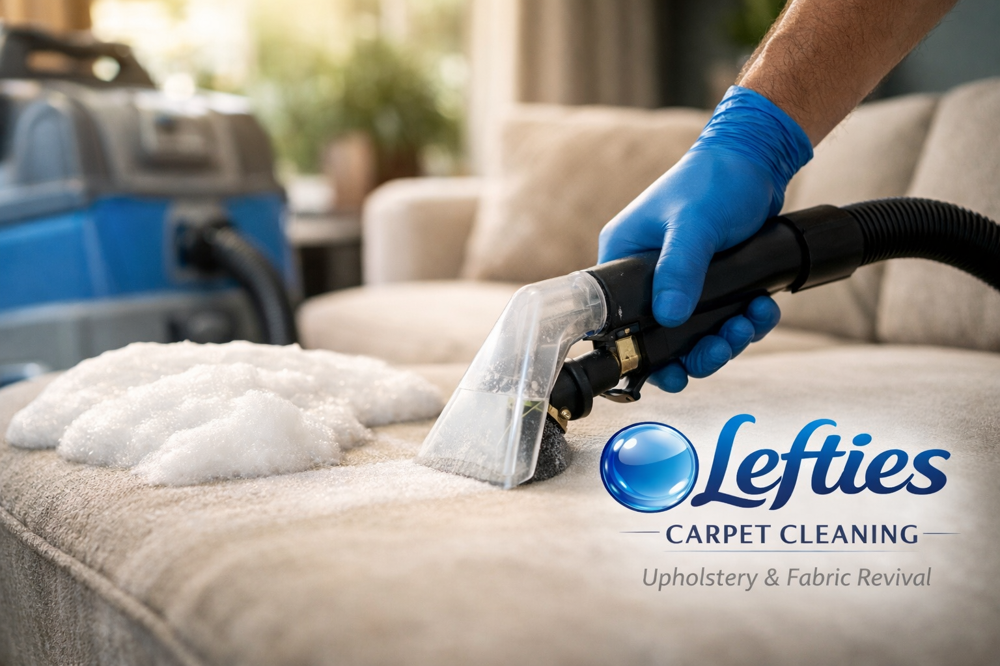

Upholstery cleaning is a lane I’ve lived in for years. From high-end leather lounges to family couches that have absorbed a decade of life, pets, spills, and sun.

Physics vs Marketing
Most people expect a miracle. What we actually deliver is a technical reset. Over time, furniture fibres bind with oils, skin cells, dust mites, and airborne contaminants.
When I carry out professional upholstery cleaning in Hervey Bay, my focus is hygiene and longevity. I remove what’s in the fabric. I cannot undo damage to the fabric.
“I won’t charge you to attempt the impossible. Sun fade, fibre wear, and dye loss aren’t dirt.”
What Professional Cleaning Actually Involves
This isn’t a spray-and-suck job. We use controlled chemistry, heat, dwell time, and extraction to safely remove contaminants without weakening fibres.
Deep soil removal
We extract the abrasive grit that hides deep in the weave and shortens fabric life by acting like sandpaper every time you sit down.
Odour neutralisation
Real hygiene involves bacteria removal at the source, not just covering up smells with temporary perfumes.
What Can’t Be Fixed
Fibre wear and thinning: If the fabric is physically worn away, cleaning won't put it back.
Permanent dye transfer: Color from new jeans or "bleeding" cushions often becomes part of the sofa's DNA.
Chemical burns: Many store-bought "spot cleaners" contain bleaching agents that permanently strip color.
Final Word
If it can be saved, I’ll save it. If it can’t, I’ll tell you before unloading the van.